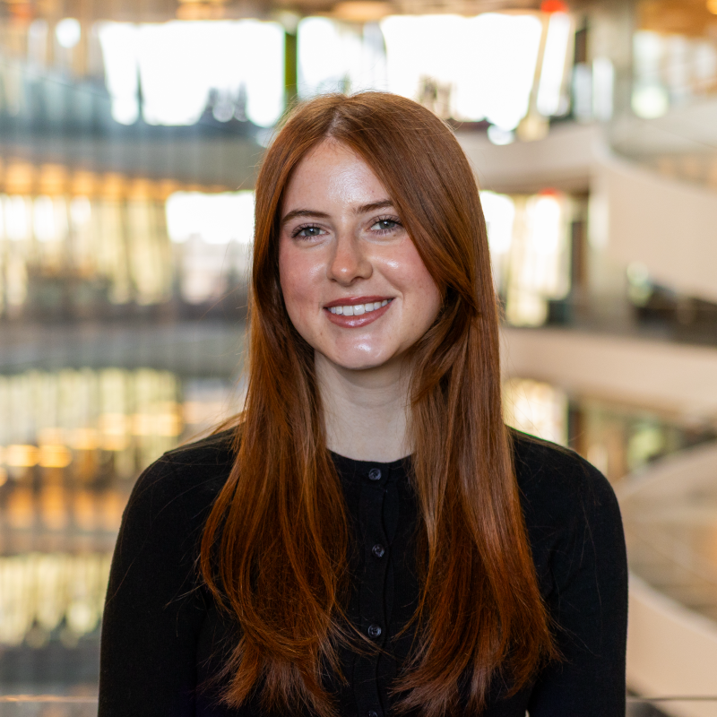

Hi there! Allow me to introduce myself. I'm a junior at Northeastern studying Computer Science and Finance, which means I get to spend my time learning about the intersection of how technology gets built and how the world actually uses it. I am really interested in thinking about how we can lead that change toward the best outcomes.
I believe the most meaningful change starts small. A process that runs a little smoother. A tool that saves someone an hour. A conversation that shifts how a team thinks about a problem. I've seen that as a student on campus, from my freshman year being involved in federally funded research, to corporate experience as a BA at a private equity firm, to being a leader on campus involved in different student-led initiatives. I've found that a lot of small problems stick around simply because nobody said anything. I try to be the person who does.
My perspective has been shaped by everywhere I've gotten to work and learn. I've had the opportunity to do classes and travel in tandem: software engineering in Australia while contributing to RAG research, learning cloud architecture at AWS in Seattle, and soon Italy, where I'll see a new part of the world and leave my mark there as well.
What I keep coming back to is pretty simple: I want the next person to have it a little easier because I was there. That's what keeps me engaged, whether I'm building something, traveling somewhere new, or just paying attention to what could be better.